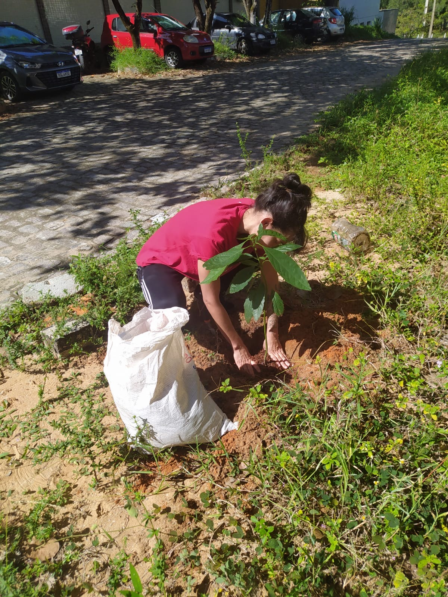
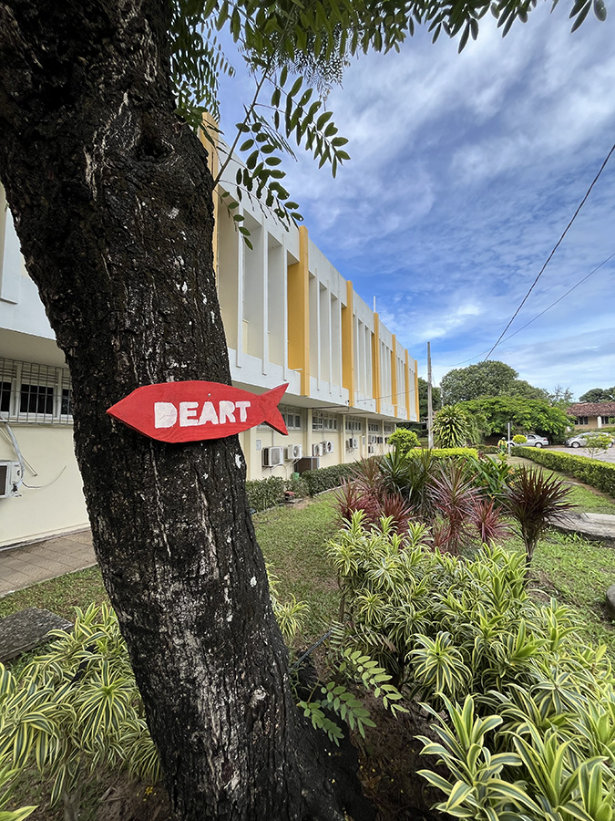

> ações em cardume º>
Projeto Guacamole (2025 - 2034)
Joseph Beuys plantou 7.000 carvalhos em Kassel, nós plantaremos meia dúzia de abacateiros nos canteiros do Deart. A ação faz parte de uma performance de 10 anos. Começamos cultivando os caroços, em 2034 serviremos um delicioso guacamole 🥑🥑🥑
Ação em Cardume 1 (2024)
Ação de confeccionar e instalar placas que indicam os caminhos para o DEART.
O Departamento de Artes está situado à margem da UFRN, distante dos principais prédios do campus Central, como o Restaurante Universitário, a Reitoria e a Biblioteca Zila Mamede. Além de estar em uma zona periférica da Universidade - o que interfere no dia a dia dos estudantes de artes - o DEART carece de placas de sinalização que comuniquem sua localização no campus. Essa "marginalização" transcende a esfera espacial, é também econômica e social. Contudo, inspirados em Helio Oiticica, que ressignificou a condição marginal, nós apontamos caminhos e damos "visualidade" à invisibilização do DEART.